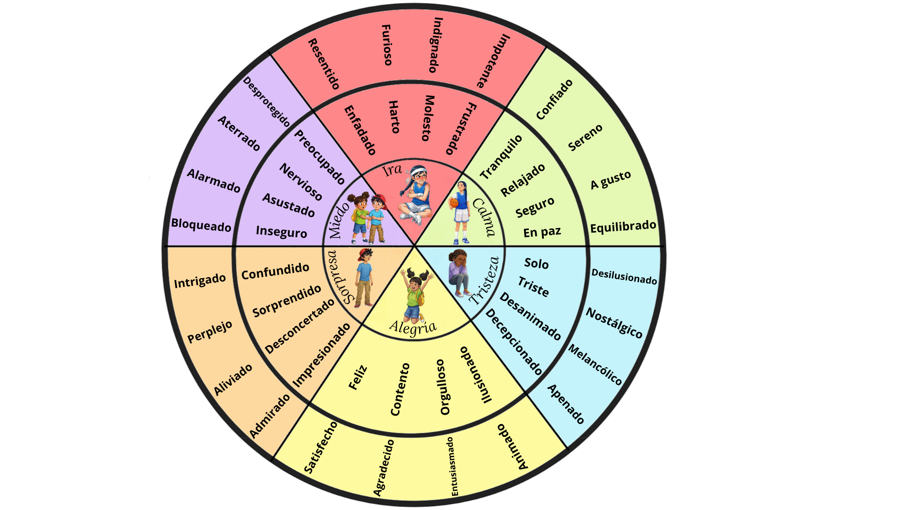
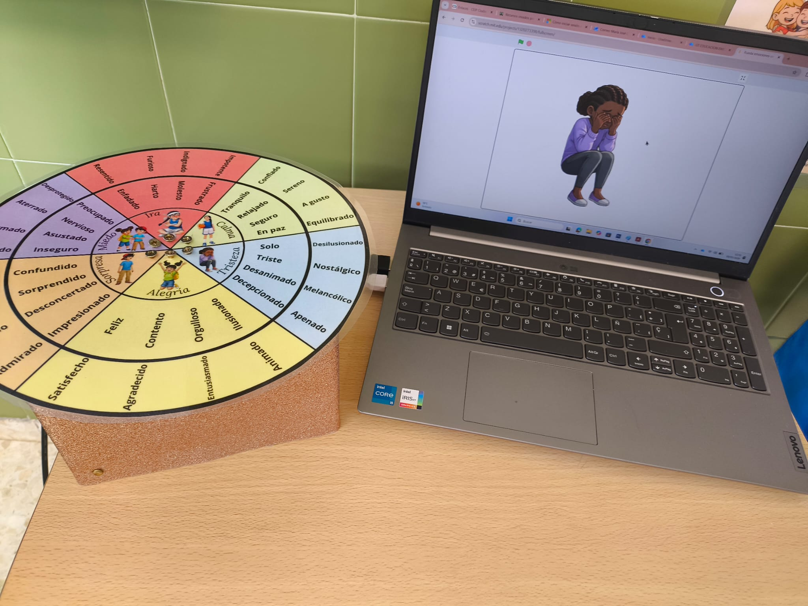
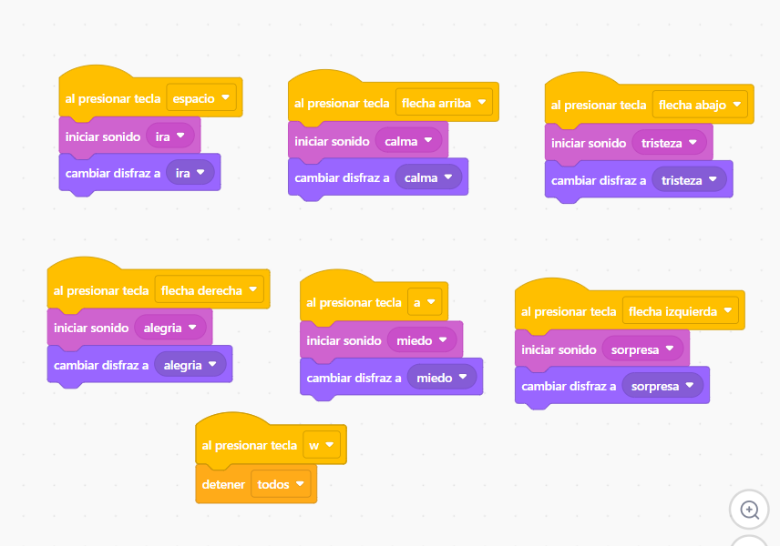

La rueda de las emociones



La rueda de las emociones programada con scratch y la tarjeta makey makey es más interactiva, visual y contiene mensajes de audio que ayudan al alumnado a comprender las emociones y a cómo gestionarlas.
Cada una de las emociones de la rueda están conectadas con la tarjeta makey makey a una tecla diferente del teclado.
El alumno o alumna selecciona la emoción que está sintiendo en ese momento y el programa responde con una retroalimentación en forma de audio donde se describe lo que siente haciendo uso de un vocabulario relativo a la emoción que se ha seleccionado. Además, le indica al alumnado cómo gestionar lo que siente.
Pincha en la bandera verde para empezar y toca las teclas:
Espacio - ira
Flecha arriba - calma
Flecha abajo - tristeza
Flecha derecha - alegría
Flecha izquierda - sorpresa
Tecla A - miedo
Tecla W- para todos los audios

Obra publicada con Licencia Creative Commons Reconocimiento Compartir igual 4.0